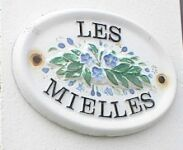

Moussieu l'Rédacteu,
Man Doue d'la vie! Tchi train entouôrre Les Mielles, qué l's Angliais appellent La Baie d'St. Ouën. Comme j'vouos l'dîsais la s'maine pâssé, j'veins d'liéthe les gâzettes des deux dreins mais et y'en a hardi d'pâler, d'ches fanmeuses Mielles. A c'menchi, chein tchi m'frappe, sans doute, est tch'i' faut qu'nouos grosses têtes âgent payi sept ou huit mille louis à d's Angliais d'Angliétèrre pour lus dithe tchi faithe, quand autchun vièr Jèrriais d'St. Ouën peut lus dithe tchi en faithe pour rein! Ch'est d'tchitter à en faithe un dépôt pour les d'chets et la saleté d'l'Île, empêchi toute bâtithie tchelconque, empêchi la galopsie dé j'vaux à Dgi l'adèrt viyant qué v'la tchi dêtruit l'hèrbe et les flieurs sauvages tch'embellissent la contrée. Et pour la mème raîson, empèchi le stâtionnement d'motos à Dgi l'adèrt. Et pis laîssi Les Mielles ès soins d'la natuthe.

Pourtchi bâti eune fèrme "modèle" dans Les Mielles quand j'avons La Fèrme d's Êtats? Acouo idée d's Angliais d'Angliétèrre tchi n'connaîssent pon Jèrri comme les Jèrriais. Et j'avons-t-i' bésoin d'eune êtabl'ye à j'vaux là-bas, et eune êcole d'"équitation"? Sapresti! Est-ch' tchi'i' n'peuvent pon penser à laîssi un mio d'tèrrain trantchil et sujet à la bieauté d'la natuthe et l'laîssi paître ès coucous quand ch'est pour san bein et l'bein du publyi? Nou vait assez d'bouanne tèrre ichîn et là dans les canmpangnes et des côtis tchi soulaient êt' couvèrts dé belles heûsives patates tch'y sont, à paître ès coucous, et pèrsonne né pathaîssent lus en gêner d'nouos jours, mais Les Mielles? Ah! I' faut bâti d'ssus!
J'viyais qu'à eune assembliée à St. Ouën, ch'tait d's Angliais tchi prannent la pathole, heutheusement en faveur dé n'pon l'avraûner. Mais où'est tch'était les Jèrriais? Ch'est vrai tch'i' n'y'en a pon hardi d'restant ont fort à faithe ches jours à dêfoui lus patates auve la faillie main d'oeuvre à lus dispôsition.
J'sis êtonné d'vaie l'nombre d'jannes gens présentés d'vant la P'tite Cour viyant tch'i' n'ont pon l'sou, n'ayant pon trouvé du travas. Eh bein, ch'est tchi sont trop pièrcheux ou tch'il' ont peux d'lus peine. Iun d'mes anmîns tch'est fèrmyi en avait tèrmé chînq pour quémenchi au clios l'aut' matîn, et pon un seul arrivit. Un aut' 'tait pour vénîn par la beusse sus l'heuthe du dîner et y'avait un moto à lé rencontrer à l'arrivée, mais i' n'sé montrit pon. Comment qu'ou criyiz qu'un fèrmyi peut y'arriver souos des circonstances dé mème? Un aut' téléphonit à d'mander s'i' pouvait travailli au jour lé jour, ch'est à dithe êt' payi châque séthée et décider s'i' r'veindrait l'lendemain. Et l'travas n'est pon dû car ch'est sus l' "harvester" où'est qu'nou n'a pon à s'rompre l'dos à êtèrrer et gliainer comme dans l'temps pâssé. Né v'là où'est qu'lé fèrmyi en est. Heutheux l'chein tchi peut trouver des Jèrriais à travailli pour li.
Ch'est vrai tch'i' faut aver du couothage pour continnuer à fèrmer quand nou peut louer ses tèrres et faithe des sou à louogi des touristes dans l'êté. Mais lé labou d'la tèrre est eune manniéthe dé vie dé cèrtaines pèrsonnes, et quand il' ont ch'la dans la couenne i' n'sont pon heutheux à faithe aut' chose, et ch'est la sorte d'vie la pus méthitabl'ye au monde quand nou-s-y r'fliéchit.
J'ai r'mèrtchi, en liêsant les gâzettes, tch'i' y'a ieu trais ou quat' garçons pouangnardés, iun prîncipalement ayant l'tchoeu bliessé au point tch'il a fallu l'opéther en Angliétèrre. Tch'est tch'éthait janmais pensé qu'des choses dé mème pouvaient s'arriver en Jèrri!
Nou ouait souvent dithe qué les temps sont bein miyeurs à ch't heu pour tout l'monde tch'i' n'l'étaient l'temps pâssé. Mais, à m'n idée, ch'est bein eune affaithe d'opinnion. Cèrtainement les gens n'étaient pon pièrcheurs comme à ch't heu. I' travaillaient pus dû et sans pliainte. Ch'est vrai tchi n'gangnaient pon tant, mais i' mènageaient acouo à mett' deux-s'trais sou d'côté, et s'i' n'avaient pon d'travas pour eune période dé temps i' vivaient atout, viyant qué ch'tait considéthé honteux d'êt' sus la pâraîsse, et s'i' n'avaient pon l'ordgi d'êt' du rang des riches, il' avaient l'ordgi bein pus méthitouaithe d'êt' îndépendants. Salut à la mémouaithe dé ches bouans vièrs!
Et i' n'avaient pon d'motos à lus porter l'driéthe partout. Lé tou d's êcoles en Jèrri j'vai eune pacotile dé femme atout lus motos à arrêter pour lus mousses à la sortie pour les porter siez ieux, et j'en ai veu tchi d'meuthent à deux pas d'l'êcole. I' n'sont pon à lus faithe dé bein, à ches êfants-là. V'là tchi lus f'thait du bein d'marchi. quand j'tais mousse, j'marchais des Landes au Haut du Mathais à l'êcole, et j'sis acouo, et j'sis acouo sus mes pids d'driéthe à quâsi huiptante-six! Ou-s-allez sans doute mé dithe qué ch'est à cause du trafi qu'les méthes font d'ité, mais i' n'y'en a pon fort lé tou d'l'êcole dé tchi qué j'vouos pâle.
George d'La Forge
Jersey Weekly Post
30/6/1977
Viyiz étout: